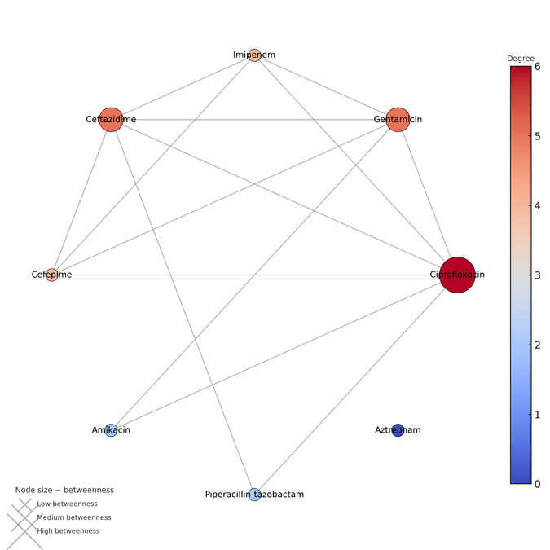

Overview
Pseudomonas aeruginosa wound infections are a persistent challenge in resource-limited clinical settings, where empiric antibiotic choices often must be made before culture and sensitivity results are available. This project analyzed antibiotic co-resistance patterns in P. aeruginosa wound isolates to identify which resistances tend to cluster together, informing safer empiric therapy choices.
Approach
Resistance profiles were analyzed using CLSI disk diffusion methodology, and a co-resistance network was constructed using Spearman correlations with bootstrap validation to identify statistically robust "hub" antibiotics whose resistance status signals broader resistance patterns.
My role
I led the analysis of resistance profiles, built and validated the co-resistance network, and presented the findings as a poster at the BSAC Winter Conference: Infection 2025 in Birmingham, UK.
Outputs
Findings were published as a conference abstract in JAC-Antimicrobial Resistance (Volume 7, Issue Supplement_4). Read the abstract · View the conference poster · View all publications